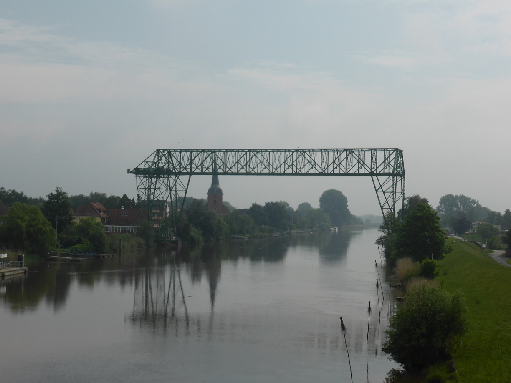
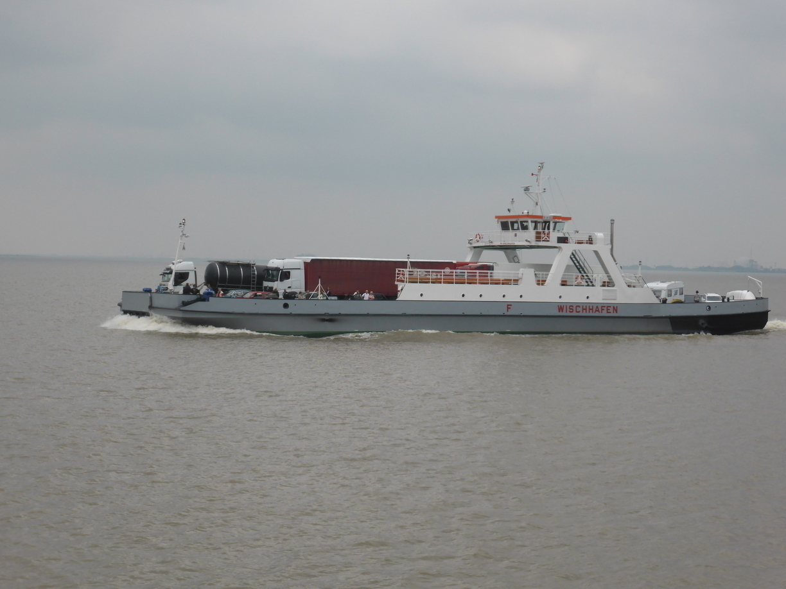

Moin Moin
Tag 6
Gnarrenburg - Hodorf 88 km
Für Tag 6 stand die Elbefähre von Wischhafen nach Glückstadt auf dem Programm. Die Elbe ist an dieser Stelle zudem die Grenze zwischen Niedersachsen und Schleswig-Holstein. Am Morgen lief es zunächst recht gut, bis es dann anfing zu regnen. In der Hoffnung das der Regen bald vorbei sei, stellte ich mich zunächst unter einem Baum. So hatte ich es beim letzten mal auch gemacht und konnte bereits nach 2 Minuten weiter. Diesmal hielt der Regen jedoch länger an und drang bald auch bis unter den Baum vor. Also schnell die Regenklamotten über und schnell eine Bushalte finden. Diese sind hier zum Glück meist überdacht gewesen und eigneten sich perfekt um vor Sonne und Regen zu fliegen. Bereits nach 500 Meter hatte ich eine Bushaltestelle erreicht und befand mich gerade im Trockenen, als der Regen aufhörte.
 Am Fähranlieger in Wischhafen angekommen musste ich keine 5 Minuten auf die nächste Fähre warten. Als Radfahrer had man zudem das Privileg die Fähre als erster zu befahren und wieder zu verlassen. Außerdem trifft man auf Fähren immer auf andere Radtouristen, sodass die Überfahrt von 25 Minuten beim Gespräch noch schneller vorüberging. 
In Schleswig-Holstein angekommen führte die verbleibende Route fast ausschließlich auf kleinen Straßen entlang des Deichs. Auf einer dieser Straßen entdeckte ich auch die bisher wohl gemütlichste Bushaltestelle. Leider war ich bereits kurz vor meinem Ziel, sodass mir nicht wirklich der Sinn nach einer Pause war.
Mein Ziel war diesmal das Fährhaus Hodorf, wo ein kleiner Zeltplatz rund um einen einladenden Schwimmteich auf mich warteten. Der Empfang durch Familie Schäpe, denen das Fährhaus gehört war sehr herzlich und alle waren an meiner Reise interessiert. Das Haus liegt direkt am Deich auf dem es einen wunderschönen Ausblick auf die Stör gibt. Sollte ich nochmal in der Gegend sein werde ich hier bestimmt wieder Halt machen.
Tag 7
Hodorf - Fockbek 74 km
Am nächsten Tag ging es zu Freunden nach Fockbek. Doch vorher ging es noch am Nordostseekanal entlang und ich durfte wieder einmal Fähre fahren. Am Nachmittag hab ich mir noch eine Wasserschlacht mit dem 2-jährigen Sohn der Gastfamilie geliefert. Dieser war ein richtiger Lausbub mit hellblondem Haar, weshalb ich ihn hier ab jetzt Michel nennen werde. Am Abend war ich hundemüde und heilfroh darüber auch mal wieder eine Nacht auf der Couch schlafen zu können statt im Zelt.
Tag 8
Ruhetag
Das Rad blieb heute mal Zuhause. Nach einem gemütlichen Frühstück ging es nach Eckernförde. Erst gab es einen kleinen Stadtbummel und anschließend ging es an den Strand.
Michel konnte natürlich wieder nicht genug vom Planschen im Wasser kriegen. Seinen kleinen Bruder interessierte das wenig. Der war allerdings auch erst einige Wochen alt. Ich bin gespannt wie das in ein paar Jahren ist, wenn beide gemeinsam Unfug anstellen. Am Ende war es aber trotz der beiden Rabauken ein äußerst erholsamer Ruhetag.